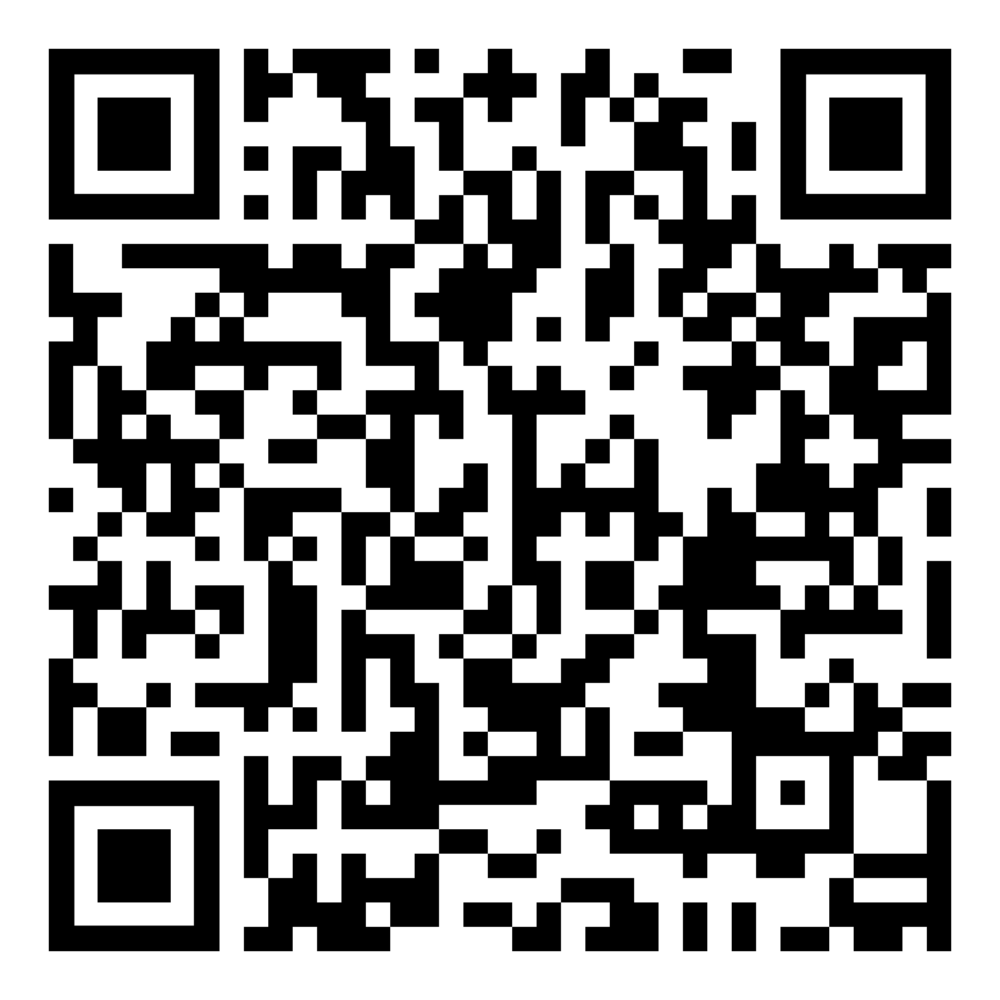

Cette pièce intègre mes recherches autour des partitions graphiques. De la même manière que les codes-barres, les QR codes sont devenus des objets courants que nous sommes amenés à rencontrer souvent dans nos vies quotidiennes. J'ai décidé de transcrire ces QR codes en musique. J'ai donc appris à les comprendre, comment sont stockées les informations ? Qu'est-ce qui définit la forme des QR codes ? Comment sont-ils lus par nos téléphones ? D'après ces recherches, j'ai compris que les QR codes pouvaient être décomposés en plusieurs groupes de huit blocs chacun, cela se traduisant en 8-bits pour le téléphone. Et que ces groupes de blocs étaient lus dans un certain ordre, ce qui permet, une fois que tout le QR code est analysé, de renvoyer vers un lien spécifique. J'ai repris cette méthode de lecture pour une composition musicale. J'ai d'abord associé un QR code à un instrument, puis chaque bloc à une note. Si le bloc est noir, cela veut dire que la note sera jouée, à l'inverse s'il est blanc il n'y aura aucun son. Ainsi, pour chaque groupe de huit blocs, il peut y avoir jusqu'à huit notes qui sont lancées en même temps. La lecture se fait donc bloc de huit par bloc de huit. Pour rendre les compositions sonores plus intéressantes, j'ai décidé de faire une suite de QR codes, un premier renvoie à un deuxième qui renvoie à un troisième. À chaque étape, une décomposition musicale existe et chacun des QR codes est associé à un instrument spécifique. Résulte ainsi trois compositions qui, avec trois téléphones, peuvent être jouées en même temps.
QR Codes Musicaux
2022-2023
Installation sonore
Dimensions variables
